扉页

版权页
京权图字：01-2013-7791
Published by arrangement with Oxford University Press for sale in the People's Republic of China only and not for export therefrom. This edition is for sale in the mainland of China only, excluding Hong Kong SAR, Macao SAR and Taiwan.
© Oxford University Press 2008
Oxford is a registered trademark of Oxford University Press
图书在版编目（CIP）数据
彩票大赢家：英汉对照／（英）博德（Border, R.）著；（英）劳埃德（Lloyd, D.）绘；祁佳译. —北京：外语教学与研究出版社，2013.12
（书虫·牛津英汉双语读物）
书名原文：The lottery winner
ISBN 978-7-5135-3926-5
Ⅰ．①彩… Ⅱ．①博… ②劳… ③祁… Ⅲ．①英语－汉语－对照读物②中篇小说－英国－现代 Ⅳ．①H319.4：I
中国版本图书馆CIP数据核字（2013）第309204号
出版人 蔡剑峰
责任编辑 杨镇明
封面设计 蔡 颖
出版发行 外语教学与研究出版社
社 址 北京市西三环北路19号（100089）
网 址 http://www.fltrp.com
版 次 2014年1月第1版
书 号 ISBN 978-7-5135-3926-5
制售盗版必究 举报查实奖励
版权保护举报电话：(010)88817519
内容简介
内容简介
想象一下：你买彩票中了五百万英镑——你突然发财了！你会怎么花这笔钱？你可以买衣服、汽车、房子；你可以去纽约、伦敦、莫斯科、巴黎、马德里……
贾森·威廉斯现在很开心。这个年轻人手里有一张中奖的彩票和一张五百万英镑的支票。不过别人也想要他的钱，有他的母亲、父亲、妻子，还有他的律师。贾森和警察之间也有些麻烦。他需要律师的帮助，而请律师的费用很高。另外还有和埃玛·卡特之间的麻烦。
埃玛·卡特非常生气。她说那是她的彩票，是她中了大奖，而不是贾森·威廉斯。埃玛·卡特也找了个律师，因为她想要回她的五百万英镑，而且马上就要。
那么谁会得到这笔钱？贾森的中奖彩票是从哪儿来的？谁在说真话？谁又在撒谎？
THE LOTTERY WINNER
THE LOTTERY WINNER
Just think. You win five million pounds in the lottery – suddenly you are rich! What are you going to do with all that money? You can buy clothes, cars, houses; you can go to New York, London, Moscow, Paris, Madrid...
Jason Williams is a very happy young man. He has a winning lottery ticket – and a cheque for five million pounds. But other people want his money too. His mother, his father, his wife, and his lawyer. Jason is in trouble with the police. He needs a lawyer's help, and lawyers are expensive. And then there's Emma Carter.
Emma Carter is very angry and unhappy. She says that it is her ticket, and that she won the lottery, not Jason Williams. Emma Carter has a lawyer too, because she wants her five million pounds, and she wants it now.
So who's going to get the money? Where did Jason get the winning lottery ticket from? Who is telling the truth – and who is telling lies?
目录
1．The bag-snatcher
1
The bag-snatcher
One Saturday afternoon in a small town, Emma Carter came out of a shoe shop with some new shoes. They were cheap shoes, but Emma was very pleased with them. She was seventy-three years old and did not have much money. She began to walk home. 'A nice cup of tea,' she thought, 'and then I can go for a walk in my new shoes.'
It was a quiet town and there was nobody in the street. Suddenly, Emma heard something behind her. She did not have time to look, because just then somebody ran up behind her, hit her on the head, and snatched her bag out of her hands. Emma fell down on her back. Then she looked up, and saw a tall young man with long, dirty brown hair. He stood and looked down at her for a second; then he ran away with Emma's bag under his arm.
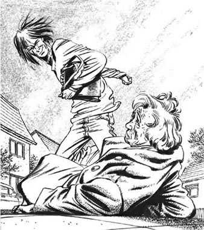
He ran away with Emma's bag under his arm.
'Help! Help!' Emma cried.
But nobody came, and after two or three minutes Emma slowly got up and went to the nearest house. The people there were very kind. They gave Emma a cup of tea, and soon an ambulance came and took her to hospital.
At the hospital a doctor looked at Emma's head and back. 'You're going to be OK,' he said. 'Just take it easy for a day or two. Can your husband help you at home?'
'My husband died eight years ago,' said Emma. 'There's only me at home.'
'Well,' the doctor said, 'we don't want you to feel ill and fall downstairs at home. So I think you must stay in hospital for tonight, and perhaps tomorrow night, too.' Later, a policeman came to the hospital and Emma told him about the bag-snatcher.
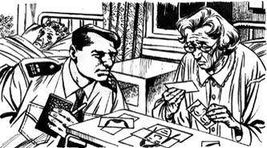
Emma made a picture of the young man's face.
'Did anybody see this young man?' he asked.
'I don't know,' said Emma. 'But there was nobody in the street when I called for help.'
'Oh dear,' the policeman said. 'What was in your bag?'
'A little money – and a lottery ticket,' said Emma. 'I buy a ticket every Saturday. Then on Saturday evening I watch the lottery on television. I always have the same numbers –5, 12, 23, 24, 38, 41. All those numbers are important to me. I was born on 5th December, 1923. I lived at number 24 Sandwich Road for 38 years...'
'Yes, yes,' said the policeman. 'I understand.' He wrote everything down in a little black book. 'Did you see the man's face?' he asked.
'Yes,' said Emma. 'I did. I fell on my back, and he looked down at me for a second. So I saw his face.'
The policeman opened a small bag. In it there were a lot of pictures of eyes and ears, hair and mouths. 'I need a picture of the man's face. Can you help me?' he said.
'Yes,' said Emma. 'He was tall and he had long, dirty brown hair. He wore blue trousers and a white shirt with a picture of a footballer. He had brown eyes...' Carefully she took the small pictures and made a big picture of the young man's face. She checked the picture carefully.
'What colour were his shoes?' asked the policeman.
Shoes! Suddenly Emma remembered her new shoes. Where were they? She told the policeman about her shoes, but then she began to cry and could not stop.
A nurse came up to Emma's bed. 'Please go now,' she said to the policeman. 'Mrs Carter needs to sleep.'
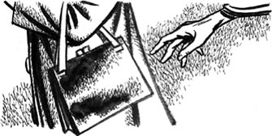
snatch v. to take something away from someone with a quick, often violent, movement 夺去；抢走
fall v. to suddenly go down onto the ground 摔倒
ambulance n. a special vehicle used for taking people who are very sick or badly injured to the hospital 救护车
lottery n. a game of chance in which people buy tickets, in order to try to win a lot of money 彩票
抢包的歹徒
1
抢包的歹徒
一座小城的星期六下午，埃玛·卡特拿着双新鞋走出了鞋店。鞋子很便宜，不过埃玛很满意。她73岁了，没什么钱。她开始往家走。“喝杯好茶，”她想，“然后我可以穿着新鞋子散散步。”
这是座安静的小城，街上没有人。突然，埃玛听到身后有动静。她来不及看，因为就在此时有人飞速地从她身后跑来，照她头上一击，从她手里抢走了包。埃玛仰面摔倒在地。随后她抬眼望去，看到一个高个子的年轻人，顶着一头脏兮兮的棕色长发。他站着低头看了埃玛一眼，便用胳膊夹着她的包跑了。
“救命！救命！”埃玛喊道。
但是没人过来。两三分钟后，埃玛慢慢地站起来，向离得最近的人家走去。那家人很友善，他们给了埃玛一杯茶，很快救护车就来了，把她送到了医院。
在医院里，一位医生检查了埃玛的头和后背。“你会好起来的。”他说，“只需休息一两天。你丈夫能在家照顾你吗？”
“我丈夫八年前就死了。”埃玛说，“家里只有我一人。”
“好吧，”医生说，“我们可不想你在家生病或摔下楼梯。所以我认为你今晚必须呆在医院，或许明晚也是。”过了不久，一名警察来到医院，埃玛将抢包歹徒的情况告诉了他。
“有人看到这个年轻人吗？”他问。
“我不知道。”埃玛说，“不过我喊救命时，街上没人。”
“哎呀！”警察说，“你包里有什么？”
“有一点钱，还有一张彩票。”埃玛说，“我每周六都会买一张彩票，然后周六晚上看电视上的彩票开奖。我总是买同样的号码——5，12，23，24，38，41。这些数字对我来说都很重要。我的生日是1923年12月5日，我在桑威奇路24号住了38年……”
“好的，好的。”警察说，“我知道了。”他把这些都记在一个小黑本上。“你看到那个人的脸了吗？”他问。
“是的，”埃玛说，“我看到了。我仰面摔在地上，他低头看了我一眼，所以我看到了他的脸。”
警察打开了一个小袋子，里面有很多张眼睛、耳朵、头发和嘴的图片。“我需要那个人的脸部图片。你能帮我吗？”他说。
“可以。”埃玛说，“他个子高高的，有一头脏兮兮的棕色长发。他穿着蓝裤子和一件白色衬衫，衬衫上印有一个足球运动员的图像。他的眼睛是棕色的……”她认真地挑着小图片，拼出了那个年轻人的脸。她仔细地核对了拼图。
“他的鞋是什么颜色的？”警察问道。
鞋！突然，埃玛想起了她新买的鞋。它们在哪儿？她把鞋的事情告诉了警察，然后便哭了起来，难以自持。
一位护士来到埃玛的床前。“现在请离开吧。”她对警察说，“卡特太太需要休息。”
2．The winning ticket.
2
The winning ticket.
Jason Williams came home and sat down on his bed. He was twenty-two years old. He lived with his father and mother in three small rooms at the top of a tall building. Every day he went out, but he did not go to work. Jason stole things. Sometimes he stole things from shops or cars; and sometimes he stole money from old people like Emma Carter. Today he was angry.
'I took that old woman's bag,' he thought. 'What did I get? Two pounds, seventy-four pence, and a lottery ticket! And it was an old, cheap bag too.'
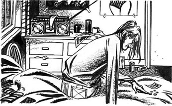
'Two pounds, seventy-four pence, and a lottery ticket!'
Jason knew about lottery tickets. He bought five tickets every weekend. He put Emma's lottery ticket in his pocket and forgot about it. Then he went out for a drink.
At the hospital a nurse put Emma to bed in a room with five other women. There was a television in the room, and at eight o'clock everybody watched the lottery. For a minute Emma watched too, but she felt very tired and soon she closed her eyes and slept. So she did not hear the winning numbers for that week's lottery...
On Sunday at twelve o'clock Jason got out of bed and made some tea. Then he opened his father's newspaper and found the winning lottery numbers: 5, 12, 23, 24, 38, 41. He checked his five lottery tickets. 'No good!' he said.
Then he remembered the old woman's ticket and checked those numbers too: 5, 12, 23, 24, 38, 41. He checked them three times. Six winning numbers!
'I'm a winner!' he said. He kissed the ticket. Then he ran into the living-room and kissed his mother.
'Here, what's the matter, Jason?' said Lily Williams. Jason sometimes hit her, but he did not usually kiss her. Her cigarette fell out of her mouth.
'The lottery! I'm this week's winner, Mum! Look – six winning numbers. I'm rich!'
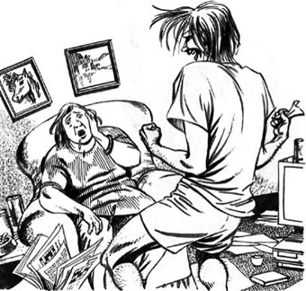
'I'm this week's winner, Mum! I'm rich!'
Jason's father came into the living-room. 'What's all this noise?' he said.
'Joe, Joe!' said Lily. 'Jason's got six winning numbers in the lottery. We're rich!'
'Wrong!' said Jason. 'I'm rich.'
His mother and father began to speak at the same time. But Jason did not listen. He went out to the telephone box in the street and made a very important telephone call.
On Monday morning a policeman came to the hospital with Emma's new shoes.
'A little girl found them in the street and took them to the police station,' he said.
'How kind of her!' said Emma.
'We found your bag too,' said the policeman. 'But there's nothing in it, Mrs Carter. I'm sorry.'
'It doesn't matter,' said Emma. 'I'm very pleased to have the bag. My son gave it to me a long time ago. He lives in Australia, but he telephones me every week... And now I've got my new shoes too. Thank you very much.' Suddenly she felt happier.
That evening an ambulance took Emma home. She made a cup of tea and sat down to watch the television news.
The newsreader smiled into Emma's living-room.
'And now for this week's lottery winner. The winning numbers were: 5, 12, 23, 24, 38, 41. And here is the man with the winning ticket – Jason Williams! Jason is twenty-two and now he's a rich man. He's got a cheque from Sunshine Lotteries for five million pounds. That's a lot of money! Well, Jason, how are you feeling tonight?'
'Wonderful!'
'And what are you going to do with your money?' 'Oh, I'm going to buy a house with fifty rooms, and a big expensive car. I'm going to go to New York, Miami...'
Emma looked at the young man on the television. Jason Williams had a big smile on his face, but he had long, dirty brown hair, brown eyes... Emma sat up quickly. 'That's the man!' she thought. 'I remember his face. He hit me and snatched my bag, and stole my lottery ticket – my winning ticket, with my winning numbers!'
She got up and went to the telephone. 'Hullo – police?' she said.
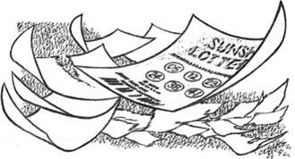
kiss v. to touch someone with your lips as a greeting, to show them love 亲吻
newsreader n. someone who reads the news on television or radio 新闻播音员
cheque n. a printed piece of paper that you write an amount of money on, sign, and use instead of money to pay for things 支票
wonderful adj. making you admire someone or something very much 很棒的，了不起的
中奖的彩票
2
中奖的彩票
贾森·威廉斯回到家，坐在床上。他22岁，和父母住在一栋高楼顶层的三间小屋里。他每天出门，但不是去工作，而是去行窃。有时他从商店或汽车里偷东西，有时从像埃玛·卡特这样的老人那里偷钱。今天他很生气。
“我抢了那个老女人的包，”他想，“我得到了什么？两英镑74便士，还有一张彩票！这个包还又旧又不值钱。”
贾森也玩彩票。他每周末都买五张彩票。他把埃玛的彩票放在口袋里，就不再去管它了。然后他出去想喝上一杯。
医院里，一位护士将埃玛安置在一间病房的病床上，里头还有另外五个女病号。病房里有台电视，8点钟大家都在看彩票开奖。埃玛也看了一会儿，但是她觉得非常疲惫，很快就闭上眼睛睡着了，因此她没有听到那周中奖彩票号码的公告……
星期天中午12点，贾森起床弄了点茶喝。然后他打开父亲买的报纸，看到了中奖彩票的号码：5，12，23，24，38，41。他核对了自己的五张彩票。“没中！”他说。
这时，他想起了那个老太太的彩票，也核对了一遍上面的号码：5，12，23，24，38，41。他核对了三遍。六个中奖号码！
“我中奖了！”他说。他亲了亲那张彩票。然后他冲进客厅，亲了亲他的母亲。
“啊，怎么了，贾森？”莉莉·威廉斯问。贾森有时会打她，但他通常不会亲她。她的烟从嘴里掉了下来。
“彩票！我是这周的大奖得主，妈妈！瞧——六个中奖号码。我发财了！”
贾森的父亲来到客厅。“吵什么呢？”他问。
“乔，乔！”莉莉说，“贾森的彩票中了六个号码，我们发财了！”
“不对！”贾森说。“是我发财了。”
他的父母同时开始说话，但是贾森没有听。他走到街上的电话亭里，打了个非常重要的电话。
星期一早晨，一名警察拿着埃玛的新鞋来到医院。
“一个小女孩在街上发现了这双鞋，送到了警察局。”他说。
“她真好！”埃玛说。
“我们还找到了你的包。”警察说，“不过包已经给掏空了，卡特太太。很抱歉。”
“没关系。”埃玛说，“能找到包我就很高兴了。这是很久以前我儿子给我的。他住在澳大利亚，不过他每周都给我打电话……现在我还拿回了我的新鞋子。非常感谢。”她突然感到开心些了。
那天晚上，一辆救护车把埃玛送回了家。她泡了杯茶，坐下来看电视新闻。
微笑的新闻播音员出现在埃玛的客厅。
“现在要揭晓本周的彩票大奖得主。中奖号码是：5，12，23，24，38，41。这位就是彩票中奖者——贾森·威廉斯！贾森22岁，现在他是个有钱人了。他得到了阳光彩票公司开出的五百万英镑的支票。这可是一大笔钱啊！对了，贾森，你今晚感觉怎样？”
“棒极了！”
“你打算怎么花这笔钱？”
“哦，我要买一座有50个房间的房子和一辆大豪车。我要去纽约、迈阿密……”
埃玛看着电视里的年轻人。贾森·威廉斯脸上带着灿烂的笑容，但他有脏兮兮的棕色长发、棕色眼睛……埃玛一下子坐直了身子。“这就是那个人！”她想，“我记得他的脸。他打了我，抢走了我的包，还偷了我的彩票——我的中奖彩票，上面有我的中奖号码！”
她站起来走到电话旁。“喂——警察吗？”她说。
3．Jason in trouble
3
Jason in trouble
At ten o'clock on Monday night Jason was a very happy man. He was in a big room in a hotel with a lot of people in beautiful clothes. There were television cameras, reporters, people from Sunshine Lotteries... Everybody had a drink in their hands, and a girl went round the room with a bottle of champagne.
'Have some more champagne,' she said to Jason.
Jason's face went very red. He snatched the bottle and took a long drink. The champagne ran down his new blue shirt. He laughed. 'Kiss me,' he said to the girl.
Suddenly the door opened and two men came in.
'Hullo!' said Jason. 'Come in and have some champagne! It's OK – Sunshine Lotteries are paying for it!'
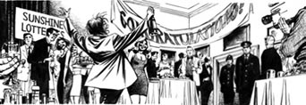
'Hullo!' said Jason. 'Come in and have some champagne!'
But the two men were not interested in champagne. They were policemen. Everybody stopped talking and looked at them.
'Is Jason Williams here?' one of the policemen said. 'That's me,' said Jason. 'What do you want?'
'We'd like to ask you some questions, Mr Williams. At the police station. Come with us, please.'
On Tuesday morning Jason was tired and unhappy. He was in a small room at the police station, and there were two policemen in the room with him. One policeman stood by the door, and watched and listened. The second policeman sat at a table and asked questions, questions, questions – the same questions, again and again.
'Now,' said the policeman. 'Tell me again. Where were you at four o'clock on Saturday afternoon?'
'At home,' said Jason. 'I'm telling you the truth. Ask my mother and father! I didn't steal anything!'
'I'm not interested in your mother and father,' said the policeman. 'I can talk to them later. At the moment I'm interested in you, and your answers to my questions. You were in town on Saturday afternoon. We know that, because a woman saw you.'
'No!' said Jason. 'That's a lie. I was at home all afternoon and evening. I watched football on television.'
'Tell me about the football, then. Who won?'
Jason said nothing. His hands and his face felt hot.
'When did the football finish? Five o'clock? Six o'clock?'
'Yes. No,' said Jason. 'I don't remember.'
The policeman smiled. 'How much money was there in the bag, Jason?'
'There wasn't—' Jason stopped. Careful, he thought. Be careful. 'There wasn't a bag,' he said. 'I told you. I didn't steal the old woman's bag!'
'Old woman? Who said anything about an old woman?'
Now Jason felt cold. 'You did,' he said.
'Oh no, I didn't,' said the policeman. 'I talked about a woman. So how did you know she was an old woman?'
He stood up. 'Jason Williams, on Saturday afternoon you hit Mrs Emma Carter on the head and snatched her bag. You stole her money and her lottery ticket. Her winning lottery ticket – so you stole five million pounds from Mrs Carter. You're in trouble, Williams. Big trouble.'
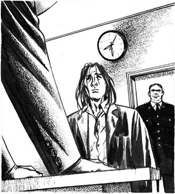
'You're in trouble, Williams. Big trouble.'
'I want to see my lawyer,' said Jason suddenly. Jason did not know any lawyers. But people on television always said that.
That afternoon a different policeman took Jason to court. The court was in a big grey building in the middle of the town. Jason and the policeman waited in a small room. The policeman did not look at Jason, and he did not say anything. Jason felt very unhappy.
Then a woman came into the room. She was young, with short brown hair and an interesting face. She wore a black skirt and a white shirt, and carried a big black bag.
'Mr Williams?' she said to Jason. 'I'm Sally Cash, and I'm your lawyer.'
The policeman left the room, and Sally Cash sat down and began to ask Jason questions.
Soon a man in a black coat came into the room. 'Are you ready to go into court, Miss Cash?' he asked.
'Nearly ready, John,' said the lawyer. She looked at Jason. 'I'm going to do all the talking in court. OK? I don't want you to say anything. Nothing important is going to happen today. They're going to send you to the Crown Court. That's a more important court.'
'When?' asked Jason.
'Soon.'
'Can I go home tonight?' asked Jason. 'Last night I slept in a cell at the police station. It wasn't very nice.'
'No, I'm sorry,' said Miss Cash. 'You can't go home. You see, you're a rich man now. You can buy a ticket to New York, Hong Kong – you can buy an aeroplane! The police want you to stay in this country.'
'But I want to go home!'
'I can ask the court,' said Sally Cash.
Two men and a woman sat at the end of a long table and listened carefully to everyone's story.
Then the woman looked at Sally Cash. 'This case must go to the Crown Court,' she said. 'Jason Williams must stay at the police station and—'
'Excuse me,' said Sally Cash. 'Mr Williams slept in a police cell last night. He's very young and he was unhappy and afraid. He'd like to go home tonight – please.'
The woman talked quietly to the two men for a minute. Then she said, 'Mr Williams, you can go home tonight. But you must leave your lottery cheque here in court.'
'Why?' asked Jason.
'We don't want you to run away, Mr Williams. Now listen carefully. You must live at your parents' house. Don't leave the town. And every morning at ten o'clock you must go to the police station. Do you understand?'
'Yes,' said Jason.
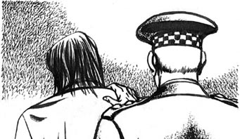
champagne n. a French white wine with a lot of bubbles, drunk on special occasions 香槟酒
lie n. something that you say or write that you know is untrue 谎言
lawyer n. someone whose job is to advise people about laws, write formal agreements, or represent people in court 律师
Crown Court n. a court of law in Britain that deals with serious criminal cases and is higher than a Magistrates' Court （英国的）刑事法庭
cell n. a small room in a prison or police station where prisoners are kept 小牢房
贾森惹麻烦
3
贾森惹麻烦
星期一晚上10点，贾森非常开心。他在一家酒店的一个大房间里，身边有许多衣着光鲜的人。那儿有电视摄像机、记者、阳光彩票公司的人……大家手里都端着饮料，一个女孩端着一瓶香槟酒，在房间里穿梭。
“再来点香槟吧。”她对贾森说。
贾森的脸已变得很红了。他抓起酒瓶，喝了好大一口。香槟顺着他新的蓝衬衣流淌下来。他大笑起来。“亲亲我。”他对女孩说。
突然，门开了，两个男人走了进来。
“喂！”贾森说，“进来喝点香槟！没关系的——阳光彩票公司请客！”
但那两个男人对香槟不感兴趣。他们是警察。大家都不再说话，看着他们。
“贾森·威廉斯在吗？”其中一个警察问。
“我就是。”贾森说，“你们想干什么？”
“我们想问你一些问题，威廉斯先生。在警察局问。跟我们走，请吧。”
星期二早晨，贾森疲惫不堪，心情很坏。他呆在警察局的一个小房间里，里面还有两个警察。一个站在门口，边看边听。另一个警察坐在桌旁，提问，提问，再提问——同样的问题，问了一遍又一遍。
“嘿，”警察说，“再跟我说一遍。周六下午4点你在哪儿？”
“在家。”贾森说，“我说的是真的。问问我爸妈！我什么都没偷！”
“我对你爸妈没兴趣。”警察说，“我之后会跟他们谈话的。现在我感兴趣的只是你，还有你对我的问题的回答。周六下午你在城里。我们知道这事儿，因为一个女人看到你了。”
“不！”贾森说。“她撒谎。下午和晚上我一直都在家。我在看电视上的足球比赛。”
“那么，跟我说说那场球赛。谁赢了？”
贾森没说话。他感到手和脸发烫了。
“球赛什么时候结束的？5点？6点？”
“是的。不，”贾森说，“我不记得了。”
警察笑了：“包里有多少钱，贾森？”
“没有——”贾森突然停住了。小心，他想，要小心。“没有包。”他继续说，“我告诉过你，我没有偷那个老女人的包！”
“老女人？这里有谁提到过老女人吗？”
这时贾森感到身上发冷。“你提到过。”他说。
“哦不，我没有。”警察说，“我说过有个女人。可你怎么知道她是个老女人？”
他站了起来：“贾森·威廉斯，星期六下午你打了埃玛·卡特太太的头，抢了她的包。你偷了她的钱和她的彩票。她的中奖彩票——所以你偷了卡特太太的五百万英镑。你惹麻烦了，威廉斯。大麻烦。”
“我要见我的律师。”贾森突然说。贾森不认识任何律师。不过在电视里人们总是这么说。
那天下午，另一名警察把贾森带到法庭。法庭位于市中心的一幢灰色大楼里。贾森和警察在一个小房间里等着。警察没有看贾森，他什么都没说。贾森觉得很不高兴。
然后一个女人走进房间。她很年轻，有一头棕色短发，长着一张有趣的脸。她穿着黑裙子和白衬衫，拿着一个大黑包。
“威廉斯先生？”她对贾森说，“我是萨莉·卡什，是你的律师。”
警察离开了房间，萨莉·卡什坐下来，开始问贾森问题。
不久，一个身着黑色外套的男人走进房间。“你准备好上法庭了吗，卡什小姐？”他问。
“差不多好了，约翰。”律师说。她把目光转向贾森：“法庭上所有的话都由我来说，好吗？我不想让你说什么话。今天不会有什么重要的事。他们会把你送到刑事法庭，那是个高一级的法庭。”
“什么时候？”贾森问。
“很快。”
“我今晚可以回家吗？”贾森问道，“昨天晚上我睡在警察局的小牢房里。那儿可不怎么样。”
“不行，很抱歉。”卡什小姐说，“你不能回家。你看，现在你是个有钱人了。你可以买票去纽约、香港——你连飞机也可以买！警察要你呆在本国。”
“但是我想回家！”
“我可以问问法庭。”萨莉·卡什说。
两个男人和一个女人坐在一张长桌的一端，认真地听着每个人的陈述。
然后那个女人看着萨莉·卡什。“这件案子必须交由刑事法庭处理。”她说，“贾森·威廉斯必须呆在警察局，而且——”
“对不起，打扰一下。”萨莉·卡什说，“威廉斯先生昨晚睡在警察局的小牢房里。他很年轻，他很不高兴，而且还害怕。他今晚想回家——请准许。”
那个女人轻声地和那两个男人交谈了一会儿。然后她说：“威廉斯先生，今晚你可以回家，但你必须把彩票支票留在这里，留在法庭。”
“为什么？”贾森问。
“我们不想你逃跑，威廉斯先生。现在仔细听好：你必须住在你父母家，不得离开这个城市，每天上午10点必须去警察局报到。你明白了吗？”
“明白。”贾森说。
4．Everybody loves a winner
4
Everybody loves a winner
When Jason got home, his mother was very excited. 'We saw you on the news last night,' she said. 'With your cheque for five million pounds. You're rich and famous!'
'I'm in trouble, Mum,' said Jason. 'Please phone the police. Say, "My son was at home on Saturday afternoon. He watched the football on television." Please.'
'I can't say that,' said his mother. 'It isn't true.'
'Would you like ten thousand pounds?' asked Jason suddenly.
'No,' said Lily Williams. 'I always tell the truth.'
'Twenty thousand,' said Jason.
'Why do you want me to tell a lie to the police?' asked Lily. 'What did you do on Saturday afternoon?' She looked at Jason. 'You did something bad. Is that it? And now you want me to tell a lie for you. But I don't tell lies.'
'Thirty thousand!' said Jason. 'Please, Mum! Help me! I slept in a police cell last night, and I was in court this afternoon. Now they're going to send me to the Crown Court. Mum – thirty thousand pounds! Think about it.'
'OK, son,' said Lily Williams slowly. 'For thirty thousand pounds. I think I can tell a lie. But what did you do on Saturday afternoon? Tell me.'
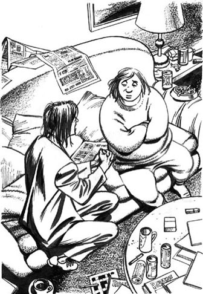
'For thirty thousand pounds, I think I can tell a lie,' said Lily.
'Nothing,' said Jason. 'I didn't do anything.'
'So why are they sending you to the Crown Court?'
Jason didn't answer, and his mother looked at him. 'And what about your Dad? He was at home on Saturday afternoon. You weren't, and he knows that. What do you want him to say to the police?'
'OK, OK,' said Jason. 'Dad can have thirty thousand pounds too. But not today. My lottery cheque is at the court, and I've only got ￡2 in my pocket!'
Jason did not sleep well that night. On Wednesday morning at ten o'clock he went to the police station.
'I'm here,' he said.
'You've got a visitor,' said the policeman. 'It's your wife. She wants to see you.'
Jason's mouth opened. 'My wife?' he said. 'But...'
The policeman opened a door and called, 'He's here, Mrs Williams!'
A young woman came into the room. 'Hullo, Jason.'
Fiona Williams was small and fat. She had long yellow hair and a big red mouth. She looked at Jason, but she talked to the policemen.
'Jason is my husband,' she said. 'Our son was born two years ago. His name's Jack. I loved Jason, but he wasn't very nice to me. Sometimes he hit me. One night he broke two of my teeth. Then the baby was ill and cried a lot. Jason hit him too. Jack was only two months old, and Jason hit him – a little baby!'
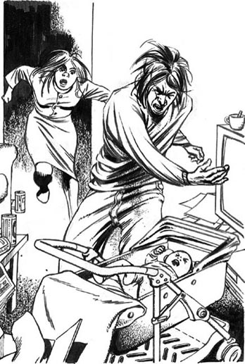
'Jason hit him-a little baby!'
'That's a lie!' said Jason. 'I didn't—'
'Oh yes, you did!' Fiona said. She spoke to the policeman again. 'So I left him, and took the baby with me. Jason didn't look for us. He didn't want us, and he never gave me any money for our son. He went home to his mother and father, and he forgot about little Jack and me. I forgot about Jason too. Then I saw him on television, with a cheque from Sunshine Lotteries for five million pounds. Well, I'm his wife, Jack's his son – and we want half of his money!'
'Well, Mr Williams,' said the policeman. 'Is this woman your wife?'
'Don't ask him, ask me!' Fiona said. 'He's my husband, and I can prove it. I'm going to get a good lawyer, and I'm going to get that two and a half million pounds!'
'Everybody wants my money!' said Jason. 'I'm going to see my lawyer!'
So on Wednesday afternoon Jason went to Sally Cash's office. It was in a big building with 'Evans, Robinson, Dennis and Day' over the door.
'Why isn't your name there too?' asked Jason.
'Because I'm young and not very important,' said Sally with a smile. 'I work for Mr Dennis.'
Sally's office was very small. There were books on the table and on all the chairs. Sally moved the books off one chair, and Jason sat down.
'So, Jason,' Sally said, 'you have a wife and son.'
'How do you know that?' said Jason.
'Your wife's lawyer telephoned me this afternoon,' said Sally. 'Your wife wants some of your lottery money. And because she's your wife, and has a two-year-old son, she can get it easily.'
'I'm not going to give her anything,' Jason said. 'She left me. She went away with a new lover, and she took our baby with her. She never wrote or telephoned. I looked for her, but I couldn't find her. I cried every night...'
'Your wife tells a different story. She left you because you hit her, and the baby. Is that true?'
'I don't remember,' Jason said angrily. 'It was a long time ago. She just wants my money. Everybody wants my money! But it was my lottery ticket, so it's my money!'
'Mmm,' said Sally. 'Perhaps it was Mrs Emma Carter's lottery ticket. She remembered the numbers because they were important to her.'
'Huh,' said Jason. 'That old woman just wants my money because she saw me on television. She thought of a good story about the numbers, and now she says that it was her ticket. Did the ticket have her name on it?'
'No. There are no names on lottery tickets.'
'So she can't prove that it was her ticket,' said Jason. 'She can't take my money away from me.'
'Perhaps she can, and perhaps she can't. We don't know. But she's going to need a good lawyer. And lawyers are expensive. It isn't going to be easy for her.'
'So that old woman wants all the money. Fiona wants half of it. My Mum wants thirty thousand pounds, my Dad wants thirty thousand pounds...'
'You're forgetting me,' said Sally.
'I don't understand,' Jason said.
'I told you. Lawyers are expensive. And I'm doing a lot of work for you. You can't pay me now, because your cheque is at the court. But I can wait.'
'Oh, thanks very much,' said Jason. 'Very kind of you.'
Sally smiled. 'Now, let's talk about the bag-snatching.'
'I didn't do it.'
Sally looked tired. 'Jason, I want to help you, but it's very difficult. Mrs Carter saw your face in the street, and then she saw you on television. She's going to stand up in the court and say, "That's the man! He stole my bag, my money, and my lottery ticket."'
'But it isn't true,' said Jason. 'I was at home. I watched the football on television. Ask my Mum!'
'How much money are you giving her, Jason?' Sally asked quietly. 'Thirty thousands pounds, was it?'
Jason's face went red. He wanted to hit Sally. She looked at his red, angry face, and waited. Then she said:

Sally looked at his red, angry face, and waited.
'Jason, in the Crown Court a lot of people are going to look at you. They're going to think, "This is a nasty young man. He hits people – his wife, his baby, old women in the street. He steals things. He wins five million pounds in the lottery, but he doesn't want to give a penny to his wife and son. And he tells lies." They're not going to like you, Jason. And that's not going to help you. So, please, tell the truth. Say that you're sorry. You're young. You can begin again, stay out of trouble. But you must tell the truth to the court.'
Jason thought for a minute. Then he looked at Sally. 'OK,' he said slowly, 'perhaps I took the old woman's bag. But that lottery ticket wasn't in her bag. It's my ticket. I bought it, I paid for it, with my money. OK?'
Sally Cash did not answer. She looked at Jason for two or three long minutes. Then she said slowly, 'OK, Jason. You stole the bag, but it was your lottery ticket.'
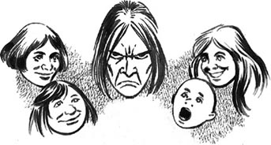
visitor n. someone who comes to visit a place or a person 访问者，探望者
prove v. to show that something is true by providing facts, information etc 证明
tired adj. bored with something, because it is no longer interesting, or has become annoying 厌烦的
difficult adj. hard to do, understand, or deal with 困难的
nasty adj. someone who is nasty behaves in an unkind and unpleasant way 龌龊的，令人讨厌的
人人爱赢家
4
人人爱赢家
贾森到家时，他的母亲非常激动。“我们在昨晚的新闻中看到你啦。”她说，“还有你那张五百万英镑的支票。你有钱有名了！”
“我惹麻烦了，妈妈。”贾森说，“求你打电话给警察，说‘星期六下午我儿子呆在家里，他在看电视里的足球赛。’求你了。”
“我不能那么说。”他的母亲说，“那不是真的。”
“你想要一万英镑吗？”贾森突然问。
“不要。”莉莉·威廉斯说，“我从来都说实话。”
“两万英镑。”贾森说。
“你为什么想让我对警察撒谎？”莉莉问。“星期六下午你做什么了？”她看着贾森，“你做坏事了，是不是？现在你想让我帮你撒谎。但我不说谎话。”
“三万英镑！”贾森说。“求你了，妈妈！帮帮我！昨晚我睡在警察局的小牢房里，今天下午我又上了法庭。现在他们要把我送往刑事法庭。妈妈——三万英镑！考虑一下。”
“好吧，儿子。”莉莉·威廉斯慢悠悠地说，“为了三万英镑，我想我可以撒个谎。不过星期六下午你干什么了？告诉我。”
“什么也没干。”贾森说，“我什么也没干。”
“那他们为什么要送你上刑事法庭？”
贾森没有回答，他的母亲看着他：“还有你爸怎么办？星期六下午他在家。你没在家，他是知道的。你想让他跟警察说什么？”
“好吧，好吧。”贾森说，“爸爸也会得到三万英镑，但不是今天。我的彩票支票在法庭，我现在兜里只有两英镑！”
那天晚上，贾森没睡好。星期三上午10点，他去了警察局。
“我来了。”他说。
“你有位访客。”警察说，“是你老婆。她想见你。”
贾森张大了嘴。“我老婆？”他说，“可是……”
警察打开门喊道：“他在这儿，威廉斯太太！”
一个年轻女人走进房间：“嘿，贾森。”
菲奥娜·威廉斯矮矮胖胖。她有一头黄色长发和一张红色的大嘴。她看了看贾森，却对警察说了起来。
“贾森是我老公。”她说，“我们的儿子两年前出生的。他叫杰克。我爱贾森，可他对我并不好。有时他还打我。有天晚上他打掉了我两颗牙。后来孩子病了，哭得很厉害。贾森也打他。杰克那时只有两个月大，贾森竟然打他——一个小婴儿！”
“撒谎！”贾森说，“我没有——”
“哦，你有！”菲奥娜说。她接着又对警察说：“因此我离开了他，带走了孩子。贾森没有找我们。他不想要我们，从没有为了我们的孩子给我任何钱。他回了他爸妈家，忘了小杰克和我。我也忘了贾森。后来我在电视上看到他，还有阳光彩票公司给的五百万英镑的支票。对了，我是他老婆，杰克是他儿子——他的钱我们想要一半！”
“嗯，威廉斯先生，”警察说，“这个女人是你老婆吗？”
“别问他，问我！”菲奥娜说，“他是我老公，我可以证明。我会找个好律师，我要得到那二百五十万英镑！”
“谁都想要我的钱！”贾森说，“我要见我的律师！”
于是星期三下午贾森去了萨莉·卡什的办公室。办公室在一座大楼里，门上写着“埃文斯、鲁宾逊、丹尼斯和戴”。
“门上怎么没有你的名字？”贾森问。
“因为我很年轻，又不是重要人物。”萨莉笑着说，“我在丹尼斯先生手下工作。”
萨莉的办公室很小。桌上和所有的椅子上都放着书。萨莉拿开一把椅子上的书，贾森坐了下来。
“这么说，贾森，”萨莉说，“你有妻子和儿子。”
“你怎么知道？”贾森说。
“今天下午你妻子的律师给我打电话了。”萨莉说，“你妻子想分一些你的彩票奖金。而且因为她是你的妻子，还带着一个两岁的儿子，她会轻松地拿到这笔钱。”
“我不会给她一分钱。”贾森说，“她离开了我。她跟一个新相好跑了，还带走了我们的孩子。她从没写过信，也没打过电话。我找过她，但是找不到。我每天晚上都会哭……”
“你的妻子可不是这么说的。她离开你是因为你打她和孩子。是真的吗？”
“我不记得了。”贾森生气地说，“那是很久以前的事了。她只是想要我的钱。谁都想要我的钱！但那是我的彩票，所以是我的钱！”
“ ，”萨莉说，“也许那是埃玛·卡特太太的彩票。她记得那些号码，因为它们对她很重要。”
，”萨莉说，“也许那是埃玛·卡特太太的彩票。她记得那些号码，因为它们对她很重要。”
“哼，”贾森说，“那个老女人只不过想要我的钱，因为她在电视上看到了我。她给那些号码编了个很妙的故事，于是就说那是她的彩票。彩票上有她的名字吗？”
“没有。彩票上没有名字。”
“所以她不能证明那是她的彩票。”贾森说，“她不能从我这儿把钱拿走。”
“也许她能，也许她不能，我们不知道。但她会需要一个好律师，而请律师是很费钱的。这对她来说可不容易。”
“所以那个老女人想要所有的钱。菲奥娜想要一半。我妈要三万英镑，我爸要三万英镑……”
“你忘记我了。”萨莉说。
“我不明白。”贾森说。
“我告诉过你，请律师很费钱。而我正在为你做很多事。你现在无法付我钱，因为你的支票在法庭。不过我可以等。”
“哦，非常感谢。”贾森说，“你真好。”
萨莉笑了：“现在，咱们来说说抢包的事吧。”
“我没干过。”
萨莉看起来有些厌烦：“贾森，我想帮你，但这很难。卡特太太在街上看见了你的脸，后来她又在电视上看到你。她会站在法庭上说，‘就是这个人！他偷了我的包、我的钱，还有我的彩票。’”
“可这不是真的。”贾森说，“当时我在家里。我在看电视上的足球赛。可以问我妈！”
“你打算给她多少钱，贾森？”萨莉轻声地问，“三万英镑，对吧？”
贾森的脸红了，他想打萨莉。萨莉看着他那张通红的、愤怒的脸，等了一会儿。然后她说：
“贾森，在刑事法庭上会有很多人看着你。他们会想，‘这是个龌龊的年轻人。他打人——他的妻子，他的孩子，街上的老太太。他偷东西。他中了五百万英镑彩票，可他一分钱都不给妻子和孩子。而且他还撒谎。’他们是不会喜欢你的，贾森。而这对你没有好处。所以，请说实话。说你很抱歉。你很年轻，你可以从头开始，远离麻烦。但你必须在法庭上说实话。”
贾森想了一会儿，然后他看着萨莉。“好吧。”他缓缓说道，“可能我拿了那个老女人的包，但那张彩票不在她的包里。那是我的彩票。我买的，我付的钱，用我的钱。行吗？”
萨莉·卡什没有回答。她看着贾森，看了足有两三分钟。然后她慢慢地说：“好吧，贾森。你偷了包，但彩票是你的。”
5．Emma gets a lawyer
5
Emma gets a lawyer
On Wednesday evening Simon Carter telephoned his mother. He lived near Sydney with his wife and their two children, and he telephoned Emma every week. She told him the story of her lottery ticket. Simon listened carefully, and got angrier and angrier.
'Is your head OK now, Mum?'
'Yes, thank you, Simon. But I'm very, very angry. That young man stole my lottery ticket. Now he's got a cheque for five million pounds – and I've got nothing! I don't want to be rich, but I do want to come to Australia and visit you, and Mollie, and my grandchildren. It's not right, Simon! I had the winning ticket, I paid for it, and that man stole it!' She began to cry.
'Mum, listen,' said Simon. 'Go and see a lawyer.'
'I don't know any lawyers,' said Emma unhappily.
'Look in the telephone book,' said Simon. 'There are lawyers in every town.'
'But lawyers are expensive. I can't pay a lawyer.'
'I can pay a lawyer,' said Simon. 'I'm sending you some money today, through my bank. Don't cry, Mum. Put on your best dress and go and see a lawyer.'
'Simon, you're a wonderful son.'
'And you're a wonderful mother. Goodbye, Mum. And good luck!'
'Well, Mrs Carter, how can I help you?'
It was Thursday morning and Emma was in Edwin Jones's office. Edwin Jones was a big man, with a red face and small blue eyes.
'It's about a lottery ticket,' Emma began.
'Ah, the lottery. Everybody wants to win the lottery!'
'But I did!' said Emma. 'It was my ticket – my numbers.'
'Tell me about it, Mrs Carter. From the beginning.'
So Emma told the lawyer everything, and he listened carefully. When Emma finished, he said:
'Those numbers on the ticket – tell them to me again.'
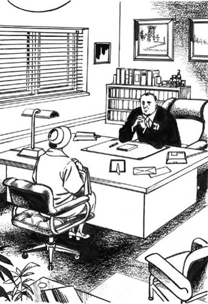
Emma told the lawyer everything.
'5, 12, 23, 24, 38, 41.'
'And you always get a ticket with those numbers. Why, Mrs Carter?' asked the lawyer.
'All those numbers are important to me. I was born on 5th December, 1923. I lived at number 24 Sandwich Road for 38 years. And my son Simon is 41 years old.'
'I see. Well, Mrs Carter,' Mr Jones said. 'What do you want me to do?'
'Please talk to Sunshine Lotteries, Mr Jones. They've got my ticket.'
'But, Mrs Carter, what can they do? All lottery tickets look the same. People don't write their names on their tickets... Perhaps it is your ticket, but we can't prove it.'
'But we can! My ticket's different! Please listen! I always put a little kiss on my ticket... you know, an X.'
'Why do you do that?'
'My son lives in Australia with his family. I'd like to visit them, but aeroplane tickets are very expensive. So every week I get a lottery ticket and I think about Simon and his wife and my grandchildren, and I send them a kiss. Simon's a wonderful son. He telephones me every week. He never forgets...'
The lawyer smiled. 'Yes, yes, I understand,' he said. 'My mother lives in Wales, and I telephone her every week too. Please go home now, Mrs Carter. I'm going to make some telephone calls. Come and see me again tomorrow.'
bank n. a business that keeps and lends money and provides other financial services 银行
埃玛找律师
5
埃玛找律师
星期三傍晚，西蒙·卡特给他的母亲埃玛打了电话。他和妻子以及两个孩子住在悉尼附近，他每周都给埃玛打电话。埃玛给他讲了彩票的事情。西蒙认真地听着，越听越生气。
“现在你的头好了吗，妈妈？”
“好了，谢谢你，西蒙。可我非常非常生气。那个年轻人偷了我的彩票。现在他得到了一张五百万英镑的支票，而我什么都没得到！我不想发财，但我确实想去澳大利亚看看你和莫莉，还有我的孙子们。这不对头，西蒙！我拥有那张中奖彩票，我掏钱买的它，而那个人偷了它！”她哭了起来。
“妈妈，听着，”西蒙说，“去找个律师。”
“我一个律师都不认识。”埃玛难过地说。
“在电话簿里找找。”西蒙说，“每个城市里都有律师。”
“但请律师要花很多钱。我请不起。”
“我可以付律师费。”西蒙说，“我今天就从银行给你汇些钱。别哭，妈妈。穿上你最好的衣服，去见个律师吧。”
“西蒙，你真是个很棒的儿子。”
“你也是个很棒的妈妈。再见，妈妈。祝你好运！”
“哦，卡特太太，有什么可以帮你的吗？”
星期四早晨，埃玛来到埃德温·琼斯的办公室。埃德温·琼斯是个大块头男人，脸红彤彤的，有一双蓝色小眼睛。
“一张彩票的事儿。”埃玛开口道。
“啊，彩票。大家都想中彩票！”
“但我中了！”埃玛说，“那是我的彩票——我的号码。”
“跟我说说这事儿，卡特太太。从头说起。”
于是，埃玛把所有的事都告诉了律师，他听得很认真。埃玛说完后，他说：
“彩票上的号码——再跟我说一次。”
“5，12，23，24，38，41。”
“你买彩票总是选这些号码，那是为什么，卡特太太？”律师问。
“所有这些数字对我来说都很重要。我的生日是1923年12月5日。我在桑威奇路24号住了38年。我儿子西蒙41岁。”
“我明白了。那么，卡特太太，”琼斯说，“你想让我做什么？”
“请和阳光彩票公司谈谈，琼斯先生。他们拿着我的彩票。”
“但是，卡特太太，他们能做什么？所有的彩票看上去都一样。人们又不在彩票上写自己的名字……或许那是你的彩票，可我们无法证明这一点。”
“但我们可以！我的彩票和其他的不一样！请听我说！我总是在我的彩票上画一个小小的亲吻符号……你知道的，一个X。”
“你为什么这样做？”
“我儿子和他的家人住在澳大利亚。我想去探望他们，但机票很贵。所以每周我都买一张彩票，我挂念西蒙、他的妻子和我的孙子们，所以我送给他们一个吻。西蒙是个很棒的儿子。他每周都给我打电话。他从来不会忘记……”
律师笑了。“是的，是的，我理解。”他说，“我母亲住在威尔士，我每周也给她打电话。现在请回家吧，卡特太太。我要打几个电话。明天再来见我吧。”
6．The money and the ticket
6
The money and the ticket
Jason did not sleep on Wednesday night. On Thursday morning he got up very early, and made some tea.
'What am I going to do?' he thought. 'They're going to send me to prison because I stole that old woman's bag. But I'm going to say sorry – sorry to the court, sorry to the old woman, sorry to everybody. Then perhaps I can get out of prison after – what did my lawyer say? – only eighteen months. OK. So I go to prison... but I don't want to lose that five million pounds! I want the court to believe it was my ticket.'
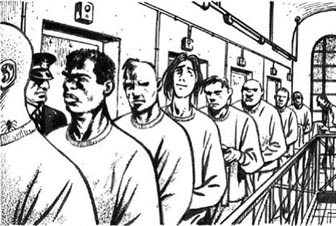
'So I go to prison...'
He drank his tea, and remembered his meeting with Sally Cash. They're not going to like you, Jason. They're going to think, 'This is a nasty young man.'
'OK,' Jason thought. 'I'm going to do something nice. What can I do? Yes, I know! Give some of the money away! I can give it to that charity, "Help the children". They send doctors and nurses to Africa and India. I saw them on television last Christmas. They always need money. Wonderful! People can't say I'm nasty after that!'
'Help the Children' had a charity shop in the middle of the town, and at nine o'clock Jason was outside the door. There were two women in the shop.
'Good morning,' said the older woman. 'Can we help you? Are you looking for some cheap clothes?'
'No,' said Jason. 'I want to give you some money.'
'That's nice of you,' said the younger woman.
'Yes,' Jason said. 'I want to give five hundred thousand pounds to "Help the Children".'
'Five hundred pounds?' said the older woman. 'That's wonderful!'
'No, no,' said Jason. 'Not five hundred pounds. Five hundred thousand pounds!'
The younger woman looked at him. 'Have you got five hundred thousand pounds?'
'Of course I have!' said Jason. 'Well, I haven't got the money now. It's at the court. But I want you to have it.'
The older woman looked at the younger woman, and then at Jason. 'You haven't got any money. Go away.'
'Yes, I have! I won the lottery!' said Jason. 'OK. Listen. Let's say a million pounds. How about that? One million pounds for "Help the Children"!'
The younger woman opened the door, and the older woman said, 'Go away! We don't want you here.'
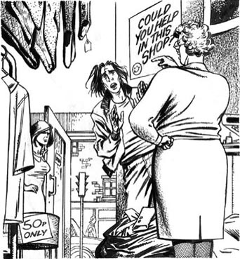
'Go away! We don't want you here,' she said.
On Thursday afternoon, Edwin Jones was in the office of Sunshine Lotteries with Mr David Ray. He told Mr Ray the story of Emma Carter and her winning numbers.
'Look, Mr Jones,' said Mr Ray. 'Mr Williams had the winning ticket, so we gave him a cheque for the money. I'm sorry, but I can't help you, or Mrs Carter.'
'But it wasn't Williams's ticket. It was Mrs Carter's.'
'You can't prove that, Mr Jones. All lottery tickets look the same. They don't have names on them.'
'I can prove it,' said Edwin Jones. 'Listen. Mrs Carter's ticket is different. You see, she always gets the same numbers. And every week she puts an X on her ticket.'
He told Mr Ray about Mrs Carter's son in Australia. Then he took a lottery ticket out of his pocket. 'This is an old ticket. Look – Mrs Carter always puts an X, here ...Please go and look at the winning ticket. Now!'
Mr Ray went away and came back five minutes later. His face was unhappy.
'Well?' said Edwin Jones.
'I don't know,' Mr Ray said. 'All the tickets go through the computer many times, so it's difficult to see—'
'Mr Ray, is there an X on that ticket, or isn't there?'
Mr Ray looked angrily at Edwin Jones. 'Perhaps there is, and perhaps there isn't,' he said. 'But what does an X prove? Perhaps hundreds of people write an X on their lottery ticket. Perhaps it's Mrs Carter's X, but how do we know? Tell me that, Mr Jones.'
'I can't tell you, but the police can. Now, Mr Ray, please call your bank and stop that cheque. Next, give that lottery ticket to the police. They're going to want it.'
Mr Ray looked unhappy. 'Yes, all right,' he said.
'Then you need a lawyer,' said Mr Jones. 'Because Mrs Carter wants her money – and she wants it now!'
On Thursday afternoon, Jason Williams went to Sally Cash's office and told her about 'Help the Children' and the women in the shop. Sally looked tired.
'Jason, Jason!' she said. 'What is all this? I don't want to listen to more lies.'
'I'm telling the truth! I went into the "Help the Children" shop, and they didn't believe me. They said, "You haven't got any money. Go away!" Please telephone them, Miss Cash. I want to give them one million pounds. Please tell them that.'
'But...' said Sally Cash. 'But your lottery cheque is at the court...'
'Yes, I know. But when I get the money, I want to give one million pounds to "Help the Children". I thought about it very carefully. I won all this money in the lottery, and I want to do something good with it. All those little children in Africa and India – I want to help them.'
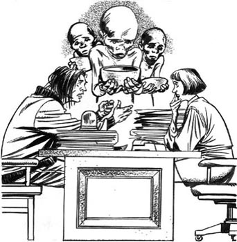
'All those little children in Africa and India –I want to help them.'
Sally looked at him for a minute.
'Please,' said Jason. 'Please help me. You wanted to help me. You told me that.'
'OK,' Sally said suddenly. 'I believe you. You want to give away a million pounds.' She thought for a second. 'Write a letter to "Help the Children". Write it here, now. Tell them about the million pounds, and put your name on the letter. I'm going to put my name on the letter too, and take the letter to the charity's office now. OK?'
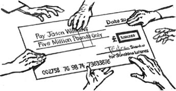
charity n. an organization that gives money, goods, or help to people who are poor, sick etc 慈善组织
charity shop n. a shop that sells used goods that are given to it, in order to collect money for a charity 慈善商店
奖金和彩票
6
奖金和彩票
星期三晚上，贾森一夜未眠。星期四早晨他很早就起了床，还泡了茶。
“我该怎么办？”他想，“他们会把我送进监狱，因为我偷了那个老太太的包。不过我会说对不起——对不起法庭，对不起那个老太太，对不起所有人。然后大概我可以出狱，在——我的律师怎么说来着？——仅仅18个月以后。好吧。那么我去坐牢……可我不想失去那五百万英镑！我要让法庭相信那是我的彩票。”
他喝了口茶，随后想起了和萨莉·卡什的会面。他们不会喜欢你的，贾森。他们会想，“这是个龌龊的年轻人。”
“好吧，”贾森想，“那我就去做些好事。我能做什么呢？对，我知道了！捐些钱出去！我可以把钱捐给那个慈善组织——‘儿童救助会’。他们派医生和护士去非洲和印度。去年圣诞节我在电视上看到过。他们总是需要钱。太棒了！这样做后人们就不会说我龌龊了！”
“儿童救助会”在市中心有家慈善商店，9点时贾森已经到了店门外。店里有两个女人。
“早上好。”年长的女人说，“需要我们帮忙吗？你是要找一些便宜的衣服吗？”
“不是。”贾森说，“我想给你们捐些钱。”
“你真好。”年轻的女人说。
“是这样，”贾森说，“我想把五十万英镑捐给‘儿童救助会’。”
“五百英镑？”年长的女人说，“那太好了！”
“不，不对。”贾森说，“不是五百英镑。是五十万英镑！”
年轻的女人看着他：“你有五十万英镑吗？”
“我当然有！”贾森说，“嗯，我现在还没拿到钱。钱在法庭。但我想让你们得到它。”
年长的女人看了看年轻的女人，又看了看贾森：“你根本就没钱。走开。”
“不，我有！我中了彩票！”贾森说，“好，听着。我捐一百万英镑。怎么样？捐一百万英镑给‘儿童救助会’！”
年轻的女人打开门，年长的女人说：“走开！这里不欢迎你。”
星期四下午，埃德温·琼斯和戴维·雷先生在阳光彩票公司的办公室。琼斯把埃玛·卡特的事情以及她的中奖号码告诉了雷先生。
“是这样，琼斯先生，”雷先生说，“威廉斯先生持有中奖彩票，所以我们开给了他那笔钱的支票。对不起，我帮不了你，也帮不了卡特太太。”
“可那不是威廉斯的彩票，是卡特太太的。”
“你无法证明这一点，琼斯先生。所有的彩票看上去都一样。彩票上面没有名字。”
“我能证明。”埃德温·琼斯说，“听着，卡特太太的彩票是不一样的。你看，她总是买相同的号码，而且她每周都会在彩票上画个X。”
他向雷先生讲了卡特太太的儿子在澳大利亚一事。然后他从兜里掏出一张彩票：“这是张旧彩票。瞧——卡特太太总是画个X，这儿……请去看看那张中奖彩票，现在就去！”
雷先生走开了，五分钟后他回来了。他的脸色不太好。
“怎么样？”埃德温·琼斯问。
“我不知道。”雷先生说，“所有的彩票都进出电脑很多次，所以很难看到——”
“雷先生，彩票上是有个X还是没有？”
雷先生怒气冲冲地看着埃德温·琼斯。“或许有，或许没有。”他说，“但是一个X能够证明什么？没准有好几百人都在他们的彩票上画个X。那可能是卡特太太的X，但我们怎么知道？告诉我，琼斯先生。”
“我无法告诉你，但警察可以。现在，雷先生，请给你们的银行打电话，冻结那张支票。然后，把那张彩票交给警察。他们会需要的。”
雷先生看起来很不高兴。“噢，好吧。”他说。
“然后你们还需要一个律师。”琼斯先生说，“因为卡特太太想要她的钱——而且她马上就要！”
星期四下午，贾森·威廉斯去了萨莉·卡什的办公室，把“儿童救助会”和慈善商店里女人的事情告诉了她。萨莉面露厌烦之色。
“贾森，贾森！”她说，“这都是些什么事？我不想再听谎话了。”
“我说的是真的！我去了‘儿童救助会’的商店，可她们不相信我。她们说，‘你根本就没钱。走开！’请给她们打个电话，卡什小姐。我想给她们一百万英镑。请将这事告诉她们。”
“但是……”萨莉·卡什说，“但是你的彩票支票在法庭……”
“对，我知道。不过拿到钱后，我想捐一百万英镑给‘儿童救助会’。这件事我很认真地想过了。我的钱都是中彩票得的，我想用它做点好事。那些非洲和印度的小孩子——我想帮助他们。”
萨莉看了他一会儿。
“求你了。”贾森说，“请帮帮我。你想要帮我的。你跟我说过的。”
“好吧。”萨莉突然说，“我相信你。你想捐一百万英镑。”她想了片刻。“给‘儿童救助会’写封信。在这儿写，就现在。告诉她们你要捐一百万英镑的事，再在信上写下你的名字。我也会把我的名字写在信上，然后马上把信送到这家慈善组织的办公室。好吗？”
7．So who's going to win?
7
So who's going to win?
On Thursday evening Sally Cash went home. When she arrived, her husband Colin was in the living-room. 'Hi,' Colin said. 'Did you have a good day?'
'Not bad,' Sally said. 'I'm working on a very interesting case. It's going to be on the news tonight, I think. Let's put the television on.'
After about ten minutes, the newsreader said:
'And now for some news about Sunshine Lotteries. The winner of last Saturday's lottery was Jason Williams. He had the winning ticket, and Sunshine Lotteries gave him a cheque for five million pounds. Now Mr Williams wants to give one million pounds to the charity "Help the Children".
But is it Mr Williams's money? Mrs Emma Carter says that it isn't. This is Mrs Carter's story. In the town last Saturday afternoon a young man hit her on the head and snatched her bag. And in that bag was a lottery ticket – the ticket with the winning numbers. Mrs Carter remembers the numbers very well, she says. So is it Jason Williams's ticket, or Mrs Carter's ticket? Who's going to get the money? We have a lawyer with us here, so let's ask him that question.'
The lawyer talked very interestingly.
'Who's that?' asked Colin.
'That's old Sam Green,' said Sally. 'He's a good lawyer. He's working for Sunshine Lotteries, I think.'
'And who are you working for, Sally?'
'Jason Williams.'
'And he snatched this woman's bag, yes?' said Colin. 'Is he going to go to prison, do you think?'
'Perhaps,' Sally said. 'But when he comes out, he's going to have five million pounds – or four million pounds.'
'But it's Emma Carter's money!' Colin said. 'It was her ticket, in her bag. Of course it was!'
'Well, she says it was,' said Sally. 'But how do we know? She's an old woman. Old people forget things easily. Perhaps she thought about her lottery numbers, but forgot to buy a ticket that day.'
'So the bag-snatcher wins, eh?' said Colin. He looked at Sally. 'He hits an old woman on the head, and wins five million pounds. Wonderful!'
'I know,' Sally said. 'It's difficult to like Jason Williams, it's true. He has a wife and child, but his wife left him because he hit her and the baby. But we must be careful. Perhaps he is telling the truth about the lottery ticket.'
'Never!' said Colin. 'When the case comes to court, they're going to believe Mrs Carter, not Jason Williams. He's nasty!'
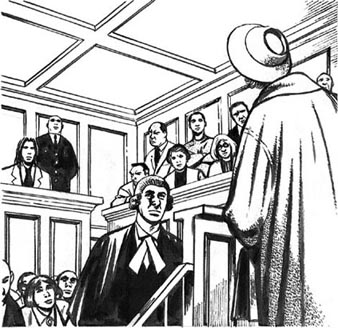
'When the case comes to court, they're going to believe Mrs Carter, not Jason Williams.'
'No, he isn't. He wants to give one million pounds to "Help the Children". People are going to like that. What a nice young man!'
Colin laughed. 'Lawyers!' he said. 'So who's going to win, Sally?' he asked.
'The lawyers, of course. Five million pounds is a lot of money, and we're going to have a wonderful time. There's a lot of us, you see. There's Mrs Carter's lawyer, Jason's wife's lawyer, the lawyer for "Help the Children", the lawyer for Sunshine Lotteries – and me, Jason's lawyer. We're going to talk about it in court for days and days. And lawyers are expensive. When we finish, a lot of that five million pounds is going to be our money!'
Sally smiled, happily. 'Colin, shall we get a new car? A Mercedes, perhaps?'
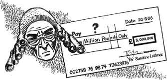
谁会是赢家？
7
谁会是赢家？
星期四傍晚，萨莉·卡什回了家。她到家时，丈夫科林在客厅里。
“嗨，”科林说，“今天过得好吗？”
“还不错。”萨莉说，“我正在处理一个非常有意思的案子。我想今晚会上电视新闻，咱们打开电视吧。”
大约10分钟后，新闻播音员说道：
现在播报和阳光彩票公司有关的新闻。上周六的彩票得主是贾森·威廉斯。他持有中奖彩票，因此阳光彩票公司给了他一张五百万英镑的支票。现在威廉斯先生想要捐出一百万英镑给慈善组织‘儿童救助会’。
不过，这是威廉斯先生的钱吗？埃玛·卡特太太说不是。下面是卡特太太的说法。上周六下午在城里，一个年轻人打了她的头，抢走了她的包。包里有一张彩票——有中奖号码的彩票。卡特太太说，她对那些号码记得很清楚，她说。那么，这是贾森·威廉斯的彩票，还是卡特太太的彩票？谁将得到那笔钱？我们这里请来了一位律师，让我们来问问他这个问题。”
律师说得很吸引人。
“那是谁？”科林问。
“那是老萨姆·格林。”萨莉说，“他是个好律师，是阳光彩票公司的律师，我想。”
“那你是谁的律师，萨莉？”
“贾森·威廉斯。”
“他抢了那个女人的包，对吗？”科林说，“他会进监狱吗，你觉得呢？”
“可能会吧。”萨莉说，“但是当他出狱后，他会拥有五百万英镑——或者四百万英镑。”
“但那是埃玛·卡特的钱！”科林说，“那是她的彩票，在她的包里。准是这么回事！”
“嗯，她说是这样的。”萨莉说，“但我们怎么知道？她是个老太太，老人容易忘事。或许她想着她的彩票号码，但那天却忘了买彩票。”
“所以抢包的歹徒赢了，嗯？”科林说。他看着萨莉：“他打了老太太的头，还中了五百万英镑。真了不起啊！”
“我知道。”萨莉说，“要想喜欢贾森·威廉斯很难，这不假。他有老婆和孩子，可他的老婆离开了他，因为他打她和孩子。但我们必须小心。没准彩票的事他说的是实话。”
“不可能！”科林说，“案子移交法庭后，大家会相信卡特太太，而不是贾森·威廉斯。他很龌龊！”
“不，他不龌龊。他想捐一百万英镑给‘儿童救助会’。人们会喜欢这件事。多好的年轻人啊！”
科林笑了。“律师啊！”他说，“那么谁会是赢家，萨莉？”他问。
“当然是律师啦。五百万英镑是很大一笔钱，而我们会过得很不错。案件中有很多律师，你瞧，有卡特太太的律师、贾森老婆的律师、‘儿童救助会’的律师、阳光彩票公司的律师——还有我，贾森的律师。我们将在法庭上成天地讨论下去，而律师费是很高的。我们结案时，那五百万英镑中的一大部分都会成为我们的钱！”
萨莉笑了，笑得很开心：“科林，我们要买辆新车吗？一辆梅赛德斯，怎么样？”
Activities Before Reading
ACTIVITIES
Before Reading
1 The title of the story is The Lottery Winner. Answer these questions.
1) Is there a lottery in your country?
2) Do you sometimes buy a lottery ticket?
3) Do you know a lottery winner?
4) Is a lottery winner usually a happy person?
2 Read the back cover of the book. How much do you know now about the story? Complete these sentences.
1) Emma Carter is...
a) a young woman.
b) an old woman.
c) an old man.
2) Emma buys a lottery ticket...
a) every week.
b) every month.
c) every day.
3) Emma has got...
a) no money.
b) only a little money.
c) lots of money.
4) Jason Williams...
a) helps old women.
b) kills old women.
c) steals money from old women.
3 Read the story introduction on the first page of the book, then answer these questions. Tick one box for each sentence.
1) Jason has got a winning lottery ticket.
YES □／NO □
2) Jason's mother and father want his money.
YES □／NO □
3) Jason is married.
YES □／NO □
4) Emma is in trouble with the police.
YES □／NO □
5) Emma is happy.
YES □／NO □
6) Emma has got a lawyer.
YES □／NO □
4 What is going to happen in the story? Can you guess? Tick one box for each sentence.
1) Jason is going to get five million pounds.
YES □／NO □
2) Emma is going to get five million pounds.
YES □／NO □
3) Jason is going to go to prison.
YES □／NO □
4) Emma is going to go to Australia.
YES □／NO □
Activities While Reading
ACTIVITIES
While Reading
Read Chapters 1 and 2, then answer these questions.
Who
1 ... bought some new shoes?
2 ... hit Emma and took her bag?
3 ... looked at Emma's head and back when she was in hospital?
4 ... bought a lottery ticket with the numbers 5, 12, 23, 24, 38, 41?
5 ... lived with his mother and father?
6 ... had a lottery ticket with six winning numbers?
7 ... lived in Australia?
8 ... brought Emma's shoes and bag to the hospital?
9 ... found Emma's shoes and bag in the street?
Read Chapter 3, then answer these questions.
Where was Jason...
1 at ten o'clock on Monday night?
2 on Tuesday morning?
3 on Tuesday afternoon?
4 on Tuesday night?
Read Chapter 4, then answer these questions.
Why
1 ... is Jason going to give his mother and father ￡30,000?
2 ... can't Jason give his parents the money now?
3 ... did Jason's wife leave him?
4 ... did Jason's wife come to the police station?
5 ... did Jason want to hit Sally Cash?
Read Chapters 5 and 6. Here are some untrue sentences about them. Change them into true sentences.
1 Emma telephoned her son in Australia.
2 Emma didn't go to see a lawyer.
3 Emma put her name on her lottery ticket.
4 The women in the charity shop believed Jason.
5 Mr Ray was happy when he heard Emma's story.
6 Sally Cash told Jason to telephone 'Help the Children'.
Before you read Chapter 7, think about the chapter title, So who's going to win? Who is going to win? Can you guess?
Read Chapter 7, then answer these questions.
1 How many lawyers are working on the lottery ticket case?
2 Why are they going to get a lot of money?
Activities After Reading
ACTIVITIES
After Reading
1 Why did Emma always choose the same numbers for her lottery ticket? Why were they important to her?
5, 12, 23 ________________
24, 38 _________________
41 __________________
2 What happens after the end of the story? You choose. Tick one box for each sentence. Then use some of the sentences to write a paragraph. Join your sentences with and, but or so where possible.
1) Emma gets a lot of money.
YES □／NO □
2) Emma goes to Austrilia to see her son.
YES □／NO □
3) Emma gives one million pounds to 'Help the Children'.
YES □／NO □
4) Jason gets a lot of money.
YES □／NO □
5) Jason's wife gets half of his money.
YES □／NO □
6) Jason gives one million pounds to 'Help the Children'.
YES □／NO □
7) Jason gives £30,000 each to his mother and father.
YES □／NO □
8) Jason goes to prison.
YES □／NO □
9) Sally and her husband buy a new car.
YES □／NO □
3 Here is a new illustration for the story. Find the best place in the story to put the picture, and answer these questions.
The picture goes in Chapter _______.
1) Who is on television? Why?
2) Who is watching television?
3) What is she going to do next? Why?
Now write a caption for the illustration.
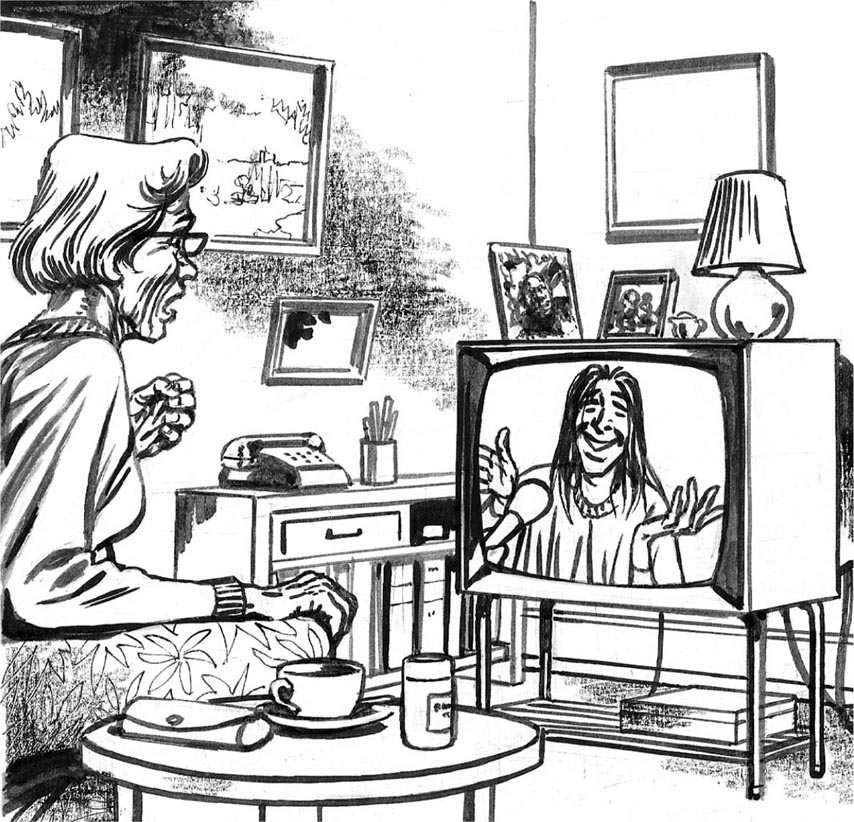
Caption:___________________________________________
4 When Emma saw Jason on television, she telephoned the police. Write out the conversation in the correct order and put in the speakers' names. Emma speaks first (5).
1)_______'Are you sure it's the same man?'
2)_______'Because of the numbers. I always choose the same numbers.'
3)_______'Can I help you, madam?'
4)_______'Because he's got this week's winning lottery ticket.'
5)_______'Hullo – police?'
6)_______'How do you know that it's your ticket?'
7)_______'I see. Well, I'm going to send a policeman to talk to you, Mrs Carter.'
8)_______'My name's Mrs Emma Carter. A young man stole my handbag on saturday. I can see him on television now.'
9)_______'Thank you very much.'
10)_______'Why is he on television, madam?'
11)_______'Yes, I'm sure. And he's got my lottery ticket.'
5 Imagine that you are Jason. Use these words to complete his letter to 'Help the Children'. (Use each word once.)
children, going, is, lawyer, letter, lottery, one, pounds, to, won, write
Dear sir/Madam
My name______Jason Williams. I______five million in the______. I want______help poor______, so I am to give you______million pounds. My______believes me, and she is going to______her name on this______too.
Yours faithfully
Jason Williams
6 Put these words into two groups.
nice, kind, nasty, happy, unhappy, angry, wonderful
good ____________
bad ____________
Now write sentences like this about these characters.
Jason Williams is nasty because he stole Emma Carter's bag.
| Jason Williams | Sally Cash |
| Simon Carter | Lily Williams |
| Fiona Williams | Emma Carter |
7 Imagine that you win five million pounds in the lottery. What are you going to do with it? Write five sentences. Use some of these verbs.
buy, give, go, stop, live
封底
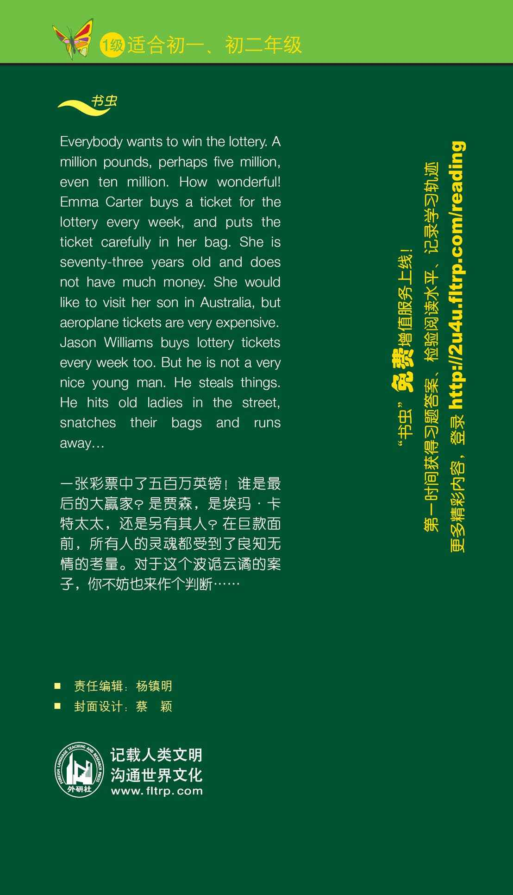